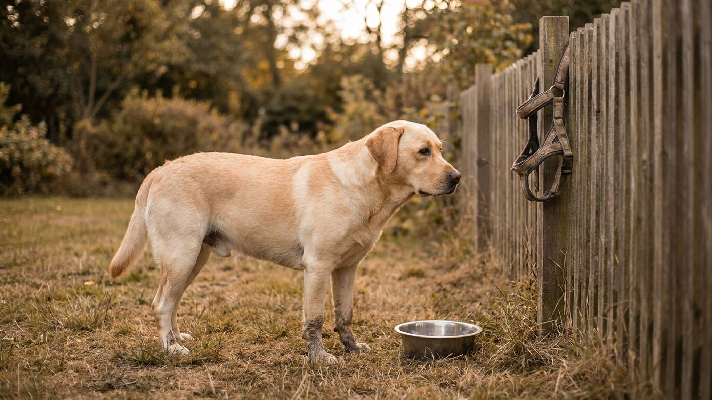

Лабрадор всегда голоден: почему и как не раскормить

13 июня 2026 · 8 минут чтения · Породы собак
Лабрадор съест всё, что дадите — и попросит ещё. Это не избалованность и не каприз: у значительной части лабрадоров есть генетическая мутация гена POMC, которая буквально отключает сигнал насыщения. Собака физически не чувствует, что наелась. Это делает контроль веса лабрадора задачей хозяина, а не питомца — и требует системного подхода.
🐾 Экономьте на лишних визитах к врачу
Сначала спросите AI-ветеринара в AnimaLife — часто этого достаточно, чтобы понять, нужен ли визит к врачу.
Спросить бесплатно → Спросить в MAX →
Почему лабрадор всегда хочет есть: генетика
В 2016 году учёные Кембриджского университета выяснили, что около 23% лабрадоров-ретриверов несут мутацию гена POMC (проопиомеланокортин). Этот ген отвечает за сигнал насыщения в мозге. Собаки с мутацией не «притворяются голодными» — они биологически не получают сигнала «достаточно».
- Мутация особенно распространена среди лабрадоров, работающих в качестве собак-поводырей — возможно, именно их пищевая мотивированность делала обучение проще.
- Проверить наличие мутации у конкретной собаки можно генетическим тестом — обсудите с ветеринаром.
- Независимо от генетики: лабрадор как порода является одним из лидеров по частоте ожирения среди собак.
Как оценить вес лабрадора без весов
Нормальный вес лабрадора: 25–36 кг для сук, 29–36 кг для кобелей. Но цифры без контекста телосложения не работают. Используйте тест рёбер:
- Норма: рёбра легко прощупываются под лёгким слоем жира, но не видны визуально.
- Лишний вес: рёбра прощупываются с усилием или не прощупываются вовсе.
- Дефицит веса: рёбра видны невооружённым глазом.
- Талия: у собаки нормального веса есть визуально заметная талия при взгляде сверху и подтянутый живот при взгляде сбоку.
Взвешивайте лабрадора раз в месяц — при нарастании веса это единственный способ заметить тенденцию до того, как она станет проблемой.
Сколько кормить лабрадора: базовые ориентиры
Нормы на упаковке корма — стартовая точка, не финальная. Они рассчитаны на среднеактивную собаку, и часто завышены производителем.
- Для взрослого лабрадора 30 кг при умеренной активности: ориентировочно 280–350 ккал на 10 кг веса в день. Точный расчёт — под конкретный корм и образ жизни собаки у ветеринара.
- После стерилизации потребность в калориях снижается на 20–30% — учитывайте это при переходе на корм для стерилизованных.
- Кормление 2 раза в день — стандарт для взрослого лабрадора. Одноразовое кормление увеличивает риск переедания за один приём.
- Лакомства и кусочки со стола считаются в суточный калораж — лабрадор виртуозно собирает «невидимые» калории у всех членов семьи.
Лабрадор и еда со стола: жёсткое правило
Лабрадор — мастер попрошайничества. Большие глаза, скорбный взгляд, лапа на колене — арсенал отработан до совершенства. Но системное получение еды со стола быстро приводит к двум проблемам.
- Лишний вес: калорийность кусочка хлеба с маслом или кусочка сыра для лабрадора сопоставима с третьим приёмом пищи.
- Пищевая навязчивость: собака, которую кормят со стола, начинает попрошайничать агрессивнее — прыжки, скуление, кража еды.
- Правило для всей семьи: лабрадора не кормят со стола никогда — и это должны соблюдать все, включая гостей и детей.
- Если хочется угостить — дайте разрешённое лакомство в миску, не из рук за едой.
Нагрузка для лабрадора: сколько нужно движения
Лабрадор — активная рабочая порода. Прогулка «до кустов и обратно» не считается нагрузкой.
- Взрослый лабрадор (1–7 лет): минимум 1–1,5 часа активного движения в день. Это не неспешная прогулка, а апортировка, плавание, игры в движении.
- Лабрадор любит воду: плавание — отличная нагрузка, особенно для собак с избыточным весом или нагрузкой на суставы.
- Нюхательные игры: поиск лакомства в траве, нюхательный коврик, работа носом — умственно нагружают и физически не травмируют суставы.
- Щенок до 1 года: нагрузка строго дозированная — не более 5 минут на каждый месяц возраста за один выход. Длительный бег и прыжки вредят несформированным суставам щенка лабрадора.
- Пожилой лабрадор 7+: активность снижается, но не прекращается. Ежедневные прогулки обязательны, просто медленнее и короче.
Лабрадор и суставы: вес как главный фактор риска
Лабрадор предрасположен к дисплазии тазобедренного и локтевого суставов. Лишний вес многократно усиливает нагрузку на поражённые суставы и ускоряет развитие артрита.
- Поддержание нормального веса — самая эффективная профилактика суставных проблем у лабрадора.
- Признаки, которые стоит обсудить с ветеринаром: собака с трудом встаёт, хромает после нагрузки, не хочет запрыгивать в машину.
- Добавки для суставов в корме или отдельно: целесообразность и выбор — за ветеринаром, не за интернет-советами.
Как снизить вес лабрадора, если он уже набран
Резкое ограничение порции без плана — не стратегия. Голодающий лабрадор становится навязчивым и тревожным, а вес возвращается при малейшем послаблении.
- Снижение веса — под контролем ветеринара. Врач рассчитает целевой вес и темп снижения.
- Корма с пометкой «Weight Control» или «Light» снижают калорийность при том же объёме — собака не голодает.
- Увеличение нагрузки: добавьте 15–20 минут активной прогулки в день. Нельзя резко увеличивать нагрузку на собаку с лишним весом — суставы не готовы.
- Лакомства: замените калорийные на морковь, огурец, кусочки яблока без косточек — лабрадор рад любой жвачке.
🐾 Всё о вашем питомце — в одном приложении
AI-ветеринар, дневник, напоминания о прививках и уходе. Установите AnimaLife — это бесплатно, в Telegram и MAX.
Открыть в Telegram → Открыть в MAX →
🐾 Понравился разбор?
Подпишитесь на канал — каждый день разбираем по одному тревожному симптому у кошек и собак: что в пределах нормы, а когда пора к врачу. Подпишитесь, чтобы не пропустить разбор, который может спасти здоровье вашего питомца.
Материал носит информационный характер и не заменяет очную консультацию ветеринара.
← Все статьи · Открыть AnimaLife в Telegram · RSS